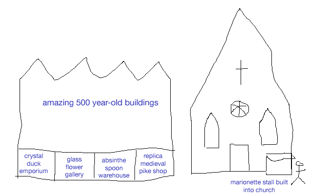

Prague is a city of tat vendors and tourist traps. We love it. It’s clear to anyone arriving in Prague that commerce falls into roughly 4 categories:
- Beer
- Pizza
- Thai massage
- Shops selling a staggering variety of a single kind of entirely useless item:

Russian dolls

Marionettes
Jude and I wondered how these shops have stayed open through a recession. A couple of boarded-up McDonalds restaurants hinted at the answer: the demand of Prague residents for marionettes and Russian dolls is inelastic, and they have met the hard times by cutting back on unnecessary items like food.
The city planners wisely accounted for the preferences of the locals in designing the standard format of the city centre streets:

City plan (approximate)
Good to hear you are finally on your travels. A long way to go just to avoid Chris and Charlotte’s wedding!
If you are in New Zealand early in 2012 we might see you there, having made arrangements beforehand!
Our news – very exciting to us – is that our granddaighter, Maygi, has got her visa so will be coming with her Mum from Thailand on 10 Dec to live in Leeds. She is looking forward to the snow. Andrew thinks the novelty may wear off!
Keep us in touch
Love from your Aunt and Uncle